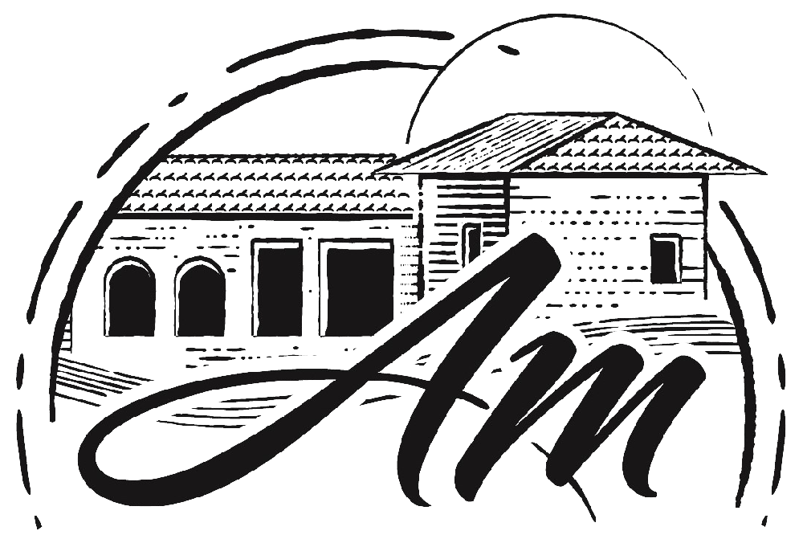
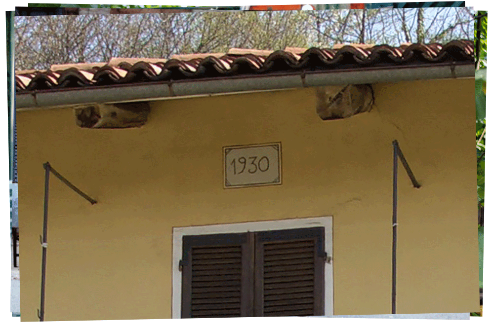

Homepage
La nostra storia
I nostri prodotti
I nostri contatti
LA STORIA
Per raccontare la storia di questa azienda agricola occorre fare un salto indietro di quasi un secolo. Da quel momento sono cambiate molte cose, ma non il rispetto della nostra famiglia per la natura e l’amore per la nostra terra.
Per raccontare la storia dell’Azienda Agricola Morra Andreas è necessario fare un rewind di una vecchia pellicola in bianco e nero fino al 1930, quando nonno bis Luigi, detto "il paneturot” (piccolo panettiere) , lasciò il lavoro da panettiere per coltivare la sua amata terra in Serravalle Langhe. situata intorno all’adorata casa, gestita con amore dalla moglie Teresa. La sua terra era prevalentemente coltivata a grano, mais e foraggio per gli animali e qualche filare di vite che serviva per ricavare un po’ di vino da consumare in famiglia. In quegli anni la coltivazione dei noccioleti era ristretta nei piccoli appezzamenti particolarmente irti e scoscesi dove non si poteva coltivare altro.
Dettaglio della facciata che riporta l'anno di costruzione.
 Luigi e Teresa con la nipote Loredana
Luigi e Teresa con la nipote Loredana
Intorno agli anni 60 nonno bis decise di sostituire il vigneto con un piccolo noccioleto nel terreno sopra la casa con l’aiuto del figlio Giovanni che, con il tempo divenne il suo “braccio destro”. Ai tempi la raccolta era manuale quindi faticosa ed impegnativa ma anche molto divertente perché chiamava tutta la famiglia per un aiuto ed era una occasione di festa e di risate. Mentre tutti erano impegnati, nonna bis Teresa preparava il suo indimenticabile ragù che profumava tutte le stanze della casa.
Per arrivare al grosso cambiamento è necessario fare un salto temporale di circa 30 anni, quando l’alluvione del 1994, distrusse tutto il lavoro di una vita rovinando i suoi amati terreni. Fu in quella occasione che nonno Gianni prendeva in mano la situazione: acquistava un altro campo e metteva a dimora le piantine di nocciolo in quella che è tuttora la proprietà. La gente in paese guardava sbalordita dalla strada perché non capiva che cosa stesse facendo ma lui, imperterrito, continuava il suo lavoro con l’aiuto di nonna Carla.

Giovanni con il genero Flavio e il nipote Andreas
 Loredana e il figlio Andreas
Loredana e il figlio Andreas
Nonno Gianni e nonna Carla hanno vinto la scommessa, le sue amate piante sono ancora qui, nonostante siano passati anni. Il rispetto per la natura e l’amore per la terra è stata tramandata a mamma Lory e a me, che fin da piccolino, andavo ad aiutare nonno sul trattore. Oggi i nonni ormai anziani mi guardano con orgoglio perché continuano a vivere con me la passione e l’amore di quella terra che loro stessi hanno valorizzato e, anche se non ho avuto modo di conoscere bene nonno bis Luigi, ho ancora le sue due piante di nocciolo secolari che continuano a produrre prima e dopo le altre e mai toccherò perché sono le “nostre” piante infinite.
Azienda agricola Andreas Morra | P. iva 03815860048
Via Monastero, 1, Loc. Quazzo, 12050 Serravalle Langhe CN
Tel.: +39-3279947784 | Rif. comm.: +39-3331601545
e-mail: a.agricolamorra@gmail.com


Copyright 2021 - Tutti i diritti riservati | Realizzato da Pietro Cagnasso | Foto di Giacomo Gatto